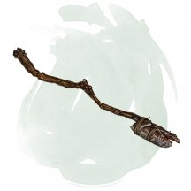
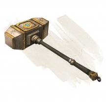
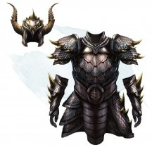

- Чудесный предмет, очень редкий
- Рекомендованная стоимость: 5 001-50 000 зм
Абракадабрус-это богато украшенный, усыпанный драгоценными камнями деревянный сундук, который весит 25 фунтов, пока он пуст. Его внутреннее отделение представляет собой куб со сторонами размером 1½ фута.
Сундук имеет 20 зарядов. Действием, существо может коснуться закрытой крышки сундука и израсходовать 1 заряд сундука, называя один или несколько немагических объектов (включая сырье, продукты питания и жидкости) общей стоимостью 1 зм или меньше. Названные объекты магическим образом появляются в сундуке, при условии, что все они могут поместиться внутри него, и сундук не содержит ничего другого. Например, сундук может создать тарелку клубники, миску горячего супа, кувшин воды, чучело животного или мешочек с двадцатью калтропами. Еда и питье, созданные сундуком, восхитительны, и портятся, если их не потребляют в течении 24 часа. Драгоценные камни и драгоценные металлы, созданные сундуком, исчезают через 1 минуту.
Сундук восстанавливает 1к20 израсходованных зарядов ежедневно на рассвете. Когда последний заряд сундука расходуется, бросьте к20. При выпадении “1” сундук теряет свою магию (становится обычным сундуком), а его драгоценные камни обращаются в пыль.
Магические предметы
- Чудесный предмет, очень редкий (требуется настройка)
- Рекомендованная стоимость: 5 001-50 000 зм
Этот кусок аметиста размером с кулак наделен способностью аметистового дракона преодолевать гравитацию. Пока вы несёте или носите магнетит, вы получаете преимущество на спасброски Силы.
Магнетит имеет 6 зарядов для следующих свойств, которые вы можете использовать, пока держите камень. Камень ежедневно, на рассвете, восстанавливает 1к6 зарядов.
Полёт. Бонусным действием вы можете потратить 1 заряд, чтобы получить способность летать в течение 10 минут. На это время вы получаете скорость полёта, равную вашей скорости ходьбы, и можете парить.
Гравитационный бросок. Действием вы можете потратить 1 заряд, чтобы сконцентрировать гравитацию вокруг существа, которое вы видите в 60 футах от вас. Цель должна преуспеть в спасброске Силы Сл 18, иначе будет отброшена на 20 футов в направлении по вашему выбору, обратном силе притяжения.
Изменение тяготения. Действием вы можете потратить 3 заряда, чтобы наложить изменение тяготения [reverse gravity] (Сл спасброска 18).
- Чудесный предмет, очень редкий (требуется настройка)
- Рекомендованная стоимость: 5 001-50 000 зм
Пока вы носите этот амулет, вы можете действием назвать хорошо знакомое вам место на другом плане. После этого необходимо совершить проверку Интеллекта Сл 15. При успехе вы накладываете заклинание уход в иной мир [plane shift]. При провале вы и все существа и предметы в пределах 15 футов от вас переноситесь в случайном направлении. Бросьте к100. При результате "1–60" вы переноситесь в случайное место на названном вами плане. При результате "61–100" вы переноситесь в случайное место на вашем текущем плане существования.
- Чудесный предмет, очень редкий (требуется настройка)
- Рекомендованная стоимость: 5 001-50 000 зм
Подвеска из чёрного опала висит у основания этой перламутровой цепочки. Священная руна выгравирована на обратной стороне кулона.
Пока вы носите этот предмет, вы получаете сопротивление урону некротической энергией. Кроме того, действием или бонусным действием вы можете наложить заговор уход за умирающим [spare the dying].
Пробуждение руны. Когда хиты существа, которое вы можете видеть в пределах 60 футов от вас, опускаются до 0 в результате получения урона, вы можете реакцией пробудить руну амулета, в результате чего он вспыхивает бледным светом. Затем хиты существа вместо этого опускаются до 1.
После того, как руна была пробуждена, она не может быть пробуждена снова до следующего рассвета.
- Чудесный предмет, очень редкий (требуется настройка)
- Рекомендованная стоимость: 5 001-50 000 зм
Этот амулет вырезан из обсидиана и имеет форму кричащего гуманоидного черепа, с рубиновыми глазами и изумрудными зубами. Он висит на железной цепочке.
Амулет имеет 6 зарядов и ежедневно, на рассвете, восстанавливает 1к6 зарядов. При ношении амулета вы можете использовать действие, чтобы потратить 1 из зарядов, чтобы переместить себя и всё, что вы носите в место в пределах 100 футов от вас. Целевое назначение, которое вы выбираете, не обязательно должно быть в вашей прямой видимости, но оно должно быть вам знакомо (другими словами, место, которое вы видели или посещали), и оно должно быть на том же плане существования, что и вы. Этот эффект не подвержен магическим ограничениям, установленным на Гробнице девяти богов, таким образом, амулет можно использоваться для входа и выхода из гробницы.
Если вы не нежить, вы должны пройти спасбросок Телосложения Сл 16, каждый раз, когда вы используете амулет для телепортации. При неудачном спасброске чёрный череп хихикает, и вы трансформируетесь во время перемещения. Трансформация вступает в силу, как только вы попадаете в пункт назначения, и определяется случайным образом броском процентной кости (к100) в соответствии с таблицей Трансформации чёрного черепа.
Трансформации чёрного черепа
к100 Трансформация 01-20 Символ Ацерерака жжёт вашу плоть, это проклятие, которое можно удалить только с помощью заклинания снятие проклятья [remove curse] или подобной магии. Пока проклятье не снято, ваши хиты не могут быть восстановлены магией. 21-35 Вы увеличиваетесь, как если бы стали целью заклинания увеличение/уменьшение [enlarge/reduce], за исключением того, что эффект длится 1 час. 36-50 Вы уменьшаетесь, как если бы стали целью заклинания увеличение/уменьшение [enlarge/reduce], за исключением того, что эффект длится 1 час. 51-70 Вы попадаете в пункт назначения, но на вас нет ничего, кроме амулета чёрного черепа. Все остальные вещи, которые вы носили или несли, появляется в случайном свободном пространстве в пределах 100 футов от вас. 71-95 Вы парализованы на 1 минуту или до тех пор, пока этот эффект не будет снят заклинанием малое восстановление [lesser restoration] или подобной магией. 96-00 Вы окаменели. Этот эффект может быть снят только заклинанием высшее восстановление [greater restoration] или подобной магией.
- Чудесный предмет, очень редкий (требуется настройка бардом)
- Рекомендованная стоимость: 5 001-50 000 зм
Существо, пытающееся играть на инструменте, не будучи настроенным на него, должно преуспеть в спасброске Мудрости Сл 15, иначе получит урон психической энергией 2к4.
Вы можете действием сыграть на инструменте и наложить одно из его заклинаний: власть над погодой [control weather], защита от зла и добра [protection from evil and good], левитация [levitate], лечение ран [cure wounds] (5-го уровня), невидимость [invisibility], полёт [fly], терновая стена [wall of thorns]. После того как инструмент использован для наложения заклинания, он не может повторно накладывать это заклинание до следующего рассвета. Заклинания используют вашу базовую характеристику и Сл спасбросков от ваших заклинаний.
Вы можете играть на инструменте при наложении заклинания, которое делает цели очарованными при провале спасброска, тем самым давая целям помеху на этот спасбросок. Этот эффект применяется только если заклинание имеет соматический или материальный компонент.
Варианты этого предмета: Арфа Анструт • Лютня Досс • Мандолина Канаит • Лира Кли • Арфа Оллава • Бандура Фоклучан • Цитра Мак-Фуирми
- Оружие (боевая кирка), очень редкое (требуется настройка)
- Рекомендованная стоимость: 5 001-50 000 зм
Вы получаете бонус +1 к броскам атаки и урона, совершённым этим магическим оружием. Оно имеет следующие свойства:
Слиться с камнем. Вы можете наложить заклинание слияние с камнем [meld into stone] из этой боевой кирки. После того, как это свойство будет использовано, его нельзя будет использовать снова до следующего рассвета.
Окаменение. Эта магическая кирка имеет 1к6+1 заряда. Когда вы наносите критический удар по существу, у которого меньше 100 хитов, вы можете потратить 1 заряд боевой кирки, чтобы это существо совершило спасбросок Телосложения со Сл 15. При провале спасброска существо становится окаменевшим на 8 часов. Когда у боевой кирки кончаются заряды, она теряет это свойство.
- Чудесный предмет, очень редкий (требуется настройка)
- Рекомендованная стоимость: 5 001-50 000 зм
Это выкованное в аду боевое знамя, сделано из адского железа и снабжено маленькой, не открывающейся клеткой, содержащей квазита [quasit]. Захваченный квазит недееспособен, а его клетка имеет КД 19, 10 хитов и обладает иммунитетом ко всем видам урона, кроме урона силовым полем. Если квазита убивают или каким-то образом освобождают, он исчезает в облаке дыма, а в клетке появляется новый, при условии, что клетка цела.
Пока вы держите знамя, ваши атаки оружием и атаки всех союзных существ в радиусе 300 футов от вас считаются магическими при определении преодоления сопротивления и иммунитета к немагическим атакам и урону.
- Оружие (любые боеприпасы), очень редкое
- Рекомендованная стоимость: 5 001-50 000 зм
Броски дальнобойной атаки, совершённые с помощью этого боеприпаса, совершаются с преимуществом против любого существа, у которого хиты были не полные.
- Чудесный предмет, очень редкий (требуется настройка)
- Рекомендованная стоимость: 5 001-50 000 зм
Пока вы носите этот золотой браслет, вы становитесь иммунны к состоянию окаменевший и способны действием накладывать заклинание окаменение [flesh to stone] (Сл спасброска 15) с помощью браслета. После того, как заклинание будет наложено 3 раза, вы больше не способны накладывать данное заклинание с помощью браслета. После этого вы становитесь способны действием накладывать заклинание изменение формы камня [stone shape], с помощью браслета. После того, как заклинание будет наложено 13 раз, браслет теряет свою магию и превращается из золотого браслета в свинцовый.
Проклятие. Родство браслета с землей проявляется в виде необычного проклятия. Существа из плоти, сильно связанные с землей и камнем, такие как каменные великаны и дварфы, с преимуществом совершают спасбросок от окаменения [flesh to stone] накладываемого с помощью браслета. Если спасбросок такого существа будет успешен, браслет заканчивает вашу настройку на него и накладывает заклинание на вас. Вы совершаете свой спасбросок с помехой, и при провале вы мгновенно каменеете.

- Чудесный предмет, очень редкий
- Рекомендованная стоимость: 5 001-50 000 зм
Эта раскрашенная латунная бутылка весит 1 фунт. Если вы действием вынете пробку, из бутылки вырвется густое облако дыма. В конце вашего хода дым исчезает во вспышке безвредного огня, и в свободном пространстве в пределах 30 футов от вас появляется ифрит [efreet].
Когда бутылку открывают в первый раз, Мастер определяет, что произойдёт дальше:
к100 Эффект 01-10 Ифрит нападёт на вас. Через 5 раундов сражения ифрит исчезает, а бутылка теряет магию. 11-90 Ифрит служит вам 1 час, выполняя все ваши команды. После этого ифрит возвращается в бутылку, которая закрывается новой пробкой. Пробку нельзя вынуть в течение 24 часов. В последующие два открытия будет происходить то же самое. Если бутылку откроют в четвёртый раз, ифрит сбежит и исчезнет, а бутылка потеряет магию. 91-00 Ифрит может три раза наложить для вас заклинание исполнение желаний [wish]. Он исчезает после того как исполнит последнее желание или спустя 1 час, а бутылка после этого теряет магию.

- Волшебная палочка, очень редкая (требуется настройка заклинателем)
- Рекомендованная стоимость: 5 001-50 000 зм
У этой волшебной палочки 7 зарядов. Если вы её держите, вы можете действием потратить 1 заряд, чтобы наложить ей заклинание превращение [polymorph] (Сл спасброска 15).
Палочка ежедневно восстанавливает 1к6 + 1 заряд на рассвете. Если вы истратили последний заряд в палочке, бросьте к20. Если выпадет «1», палочка рассыплется в пыль и уничтожится.

- Оружие (любой меч), очень редкое (требуется настройка)
- Рекомендованная стоимость: 5 001-50 000 зм
Вы получаете бонус +2 к броскам атаки и урона, совершённым этим магическим оружием.
У меча есть 1к8 + 1 заряд. Если вы совершаете критическое попадание по существу, у которого меньше 100 хитов, оно должно преуспеть в спасброске Телосложения Сл 15, иначе мгновенно умрёт, когда меч вырвет его жизненную силу из тела (конструкты и нежить обладают иммунитетом). Меч теряет 1 заряд, если существо умирает. Когда у меча не останется зарядов, он теряет это свойство.
- Чудесный предмет, очень редкий (требуется настройка)
- Рекомендованная стоимость: 5 001-50 000 зм
Этот голубой пятифутовый вымпел пошит из шёлка и постоянно треплется, будто дует ветер. Руна Винд (ветер) на нём чем-то напоминает облако. Вымпел обладает следующими свойствами, которые функционируют, пока он при вас.
Шаг ветра. Действием вы можете пролететь 20 футов. Если вы не приземлитесь в конце этой дистанции, вы падаете, если у вас нет других способов оставаться в воздухе.
Успокаивающий ветерок. Вы не можете задохнуться.
Объятья ветра. Реакцией, когда вы падаете, вы можете избежать получения какого-либо урона от падения. Как только вы воспользуетесь этим свойством, вы не можете им более воспользоваться пока не совершите короткий или продолжительный отдых.
Ветроход. Пока вы настроены на эту руну, вы можете творить заклинание левитация [levitate] бонусным действием. Как только вы воспользуетесь этим свойством, вы не можете им более воспользоваться пока не совершите короткий или продолжительный отдых.
Дар ветра. Вы можете перенести магию вымпела на не магический предмет комплект доспехов, пара обуви или плащ нарисовав на нём руну Винд пальцем. Перенос требует 8 часов работы, и чтобы вымпел и предмет находились в 5 футах друг от друга.
В конце этого ритуала, вымпел уничтожается, а на предмете появляется серебристая руна и он получает следующие свойства:
- Доспехи. Доспехи теперь необычный магический предмет, требующий настройки. Вы получаете дополнительные 5 футов скорости, пока носите эти доспехи, и если в нормальных условиях они предоставляли помеху на проверки Скрытности, то они более не предоставляют её.
- Обувь/Плащ. Пара обуви или плащ теперь редкий магический предмет, требующий настройки.
Пока вы носите этот предмет, вы можете использовать до 20 футов своего перемещения каждого своего хода для полёта такого же расстояния. Если вы не приземлитесь в конце этой дистанции, вы падаете, если у вас нет других способов оставаться в воздухе. Вы также можете сотворить заклинание падение пёрышком [feather fall]. Как только вы наложите это заклинание таким образом, вы не можете сделать этого пока не совершите короткий или продолжительный отдых.
- Оружие (пистоль), очень редкое
- Рекомендованная стоимость: 5 001-50 000 зм
Это магическое дальнобойное оружие представляет собой расклешенный пистолет с руной «Буря», выгравированной вдоль ствола. Вы получаете бонус +1 к броскам атаки и урона, совершённым с его помощью. Боеприпасов не требует, наносит урон звуком, а не колющий, не имеет свойства «перезарядка».
Пробуждение руны. Бонусным действием вы можете призвать руну оружия, чтобы запустить энергетический шар в точку, которую вы можете видеть в пределах 30 футов от себя. Затем энергия детонирует в сферу бурного ветра и грома радиусом 10 футов с центром в этой точке и каждое существо в этой сфере должно совершить спасбросок Телосложения Сл 14. При провале существо получает 3к6 урона звуком и не может совершать реакции до конца вашего следующего хода. При успешном спасброске существо получает только половину урона.
После того, как руна была пробуждена, она не может быть пробуждена снова до следующего рассвета.
- Чудесный предмет, очень редкий (требуется настройка)
- Рекомендованная стоимость: 5 001-50 000 зм
Вы можете действием положить эту гранитную сферу диаметром 1 дюйм на землю и произнести её командное слово, которое на Терране означает «окаменение». Сфера быстро вырастает в толстую башню, которая остается до тех пор, пока вы действием не прикоснетесь к башне и снова не произнесете командное слово, после чего башня снова сжимается до гранитной сферы диаметром 1 дюйм. Чтобы уменьшиться таким образом, башня должна быть пустой. Башня усеяна грязными выступами, которые постоянно выдвигаются и втягиваются по ее поверхности, как будто башня дышит сквозь слой густой грязи.
Каждое существо в области, где появляется башня, должно совершить спасбросок Ловкости Сл 15, получая 10к10 дробящего урона при провале или половину этого урона при успехе. В любом случае существо выталкивается на незанятое место снаружи, но рядом с башней. Объекты в этой области, которые никто не несёт и носит, получают этот урон и автоматически толкаются.
Всякий раз, когда она расширяется, грязевая башня сливается с любым природным камнем, которого она касается, неуклюже наклоняясь и вклиниваясь, чтобы коснуться как можно большего количества природного камня.
Башня имеет ширину 20 футов и высоту 30 футов, с бойницами со всех сторон и зубчатыми стенами наверху. Её интерьер разделен на два этажа, соединенных между собой лестницей, проходящей вдоль одной стены. Лестница заканчивается люком, ведущим на крышу. При активации башня имеет небольшую дверь на стороне, обращенной к вам. Дверь открывается только по вашей команде, которую вы можете произнести бонусным действием. Она невосприимчива к заклинанию открывание [knock] и подобной магии, например, к колокольчику открывания [chime of opening].
Хотя башня выглядит как камень, она сделана из адамантина, и его магия не позволяет существам опрокинуть её. Крыша, дверь и стены имеют по 100 хитов каждая, иммунитет к урону от немагического оружия, за исключением осадных орудий, и сопротивление всем остальным видам урона. Будучи слитой с натуральным камнем, грязевая башня обладает иммунитетом ко всем повреждениям. Только заклинание исполнение желаний [wish] может восстановить башню (это использование заклинания считается копированием заклинания 8-го уровня или ниже). Каждое накладывание исполнение желаний [wish] заставляет крышу, дверь или одну стену восстанавливать 50 хитов.

- Оружие (боевой молот), очень редкое (требуется настройка дварфом)
- Рекомендованная стоимость: 5 001-50 000 зм
Вы получаете бонус +3 к броскам атаки и урона, совершённым этим магическим оружием. Оно обладает свойством «метательное» с нормальной дистанцией 20 футов и максимальной дистанцией 60 футов. Если вы попадёте дальнобойной атакой этим оружием, оно причиняет дополнительный урон 1к8 или, если цель — Великан, то 2к8. Сразу же после атаки оружие возвращается в вашу руку.
- Чудесный предмет, очень редкий (требуется настройка существом, у которого отсутствует рука или запястье)
- Рекомендованная стоимость: 5 001-50 000 зм
Этот протез был разработан изобретателями дома Каннит. Чтобы настроиться на этот предмет, вы должны прикрепить его к руке на запястье, локтю или плечу, после чего протез волшебным образом преобразуется в копию заменяемой конечности.
Будучи прикреплённым, протез предоставляет следующие преимущества:
- Протез — это полностью работоспособная часть вашего тела.
- Вы можете действием отсоединить протез. Он самостоятельно отсоединяется, если вы перестаёте быть настроены на него. Его нельзя отсоединить против вашей воли.
- Протез — это магическое рукопашное оружие, которым вы владеете. При попадании он наносит 1к8 урона силовым полем и имеет свойство метательное (дист. 20/60). При дальнобойной атаке протез отсоединяется и летит к цели, после чего немедленно возвращается к вам и снова присоединяется.

- Доспех (латы), очень редкий (требуется настройка)
- Рекомендованная стоимость: 5 001-50 000 зм
Пока вы носите этот доспех, вы получаете бонус +1 к КД, можете говорить на языке Бездны и понимаете этот язык. Кроме того, латные рукавицы с шипами этого доспеха делают ваши безоружные атаки руками магическим оружием, причиняющим рубящий урон с бонусом +1 к броскам атаки и урона и костью урона 1к8.
Проклятье. Надев этот проклятый доспех, вы не можете его снять, пока не станете целью заклинания снятие проклятья [remove curse] или подобной магии. Нося этот доспех, вы совершаете с помехой броски атаки по демонам и спасброски от заклинаний и особых умений демонов.
- Доспех (лёгкий, средний, тяжёлый), очень редкий (требуется настройка)
- Рекомендованная стоимость: 5 001-50 000 зм
Пока вы носите эти доспехи, вы можете использовать свою реакцию, чтобы получить преимущество в спасброске от заклинания. После того, как это свойство будет использовано, его нельзя будет использовать снова до следующего рассвета.
Кроме того, пока вы носите эти доспехи, вы можете использовать их для наложения заклинания преграда магии [antimagic field], не требуя компоненты заклинания. Как только это свойство будет использовано, его нельзя будет использовать снова до следующего рассвета.
- Доспех (любой тяжёлый), очень редкий (требуется настройка)
- Рекомендованная стоимость: 5 001-50 000 зм
В центре нагрудника этого доспеха находится цитрин, на котором выгравирована руна «Щит».
Когда вы носите эти доспехи, максимальное количество ваших хитов увеличивается на величину, равную 10 + ваш уровень.
Пробуждение руны. Действием вы можете пробудить руну доспеха, чтобы наложить с её помощью заклинание маяк надежды [beacon of hope]; заклинание действует 1 минуту и не требует концентрации. После того как руна была вызвана, она не может быть вызвана снова до следующего рассвета.

- Доспех (чешуйчатый), очень редкий (требуется настройка)
- Рекомендованная стоимость: 5 001-50 000 зм
Этот доспех изготавливается из чешуи определённого дракона. Иногда драконы сами собирают сброшенные чешуйки и дарят их гуманоидам. В других случаях успешные охотники тщательно выделывают и хранят шкуры убитых драконов. В любом случае, доспехи из чешуи драконов высоко ценятся.
Пока вы носите этот доспех, вы получаете бонус +1 к КД, совершаете с преимуществом спасброски от Ужасающей внешности и оружия дыхания драконов, а также обладаете сопротивлением одному виду урона, зависящему от вида дракона, чья чешуя была использована для изготовления доспеха (смотрите таблицу).
Кроме того, вы можете действием сосредоточиться, чтобы с помощью магии определить расстояние и направление до ближайшего дракона в пределах 30 миль, вид которого совпадает с видом дракона, чья чешуя была использована для изготовления доспеха. Это особое действие нельзя повторно совершать до следующего рассвета.
Дракон Сопротивление Белый Холод Бронзовый Электричество Зелёный Яд Золотой Огонь Красный Огонь Латунный Огонь Медный Кислота Серебряный Холод Синий Электричество Чёрный Кислота
- Доспех (кожаный доспех), очень редкий (требуется настройка)
- Рекомендованная стоимость: 5 001-50 000 зм
Ряд экспериментов Квалиша был попытками исследовать работы легендарного мага Хеварда, который первым создал то, что он назвал доспех наемника. Пока вы носите эту броню, вы получаете бонус +1 к КД. Кроме того, автоматические ремни доспеха могут помочь с извлечением и укладкой оружия в ножны, так что вы можете вытащить или убрать два одноручных оружия, когда обычно вы можете вытащить или убрать только одно.
Этот доспех также имеет шесть карманов, каждый из которых представляет собой демиплан. Каждый карман может вместить до 20 фунтов материала, не превышая объема 2 кубических фута. Доспех всегда весит 10 фунтов, независимо от содержимого карманов. Помещение объекта в один из карманов брони соответствует обычным правилам взаимодействия с объектами. Чтобы достать предмет из кармана доспеха, вам необходимо использовать действие. Когда вы достаете из кармана за определенную вещь, она всегда волшебным образом оказывается наверху.
Размещение доспехов внутри демиплана, созданного сумкой хранения [bag of holding], удобным рюкзак Хеварда [heward’s handy haversack] или подобным предметом, мгновенно уничтожает оба предмета и открывает врата в Астральный план. Врата возникают там, где один предмет был помещен внутрь другого. Любое существо в пределах 10 футов от врат засасывается через них и попадает в случайное место на Астральном плане. Затем врата закрываются. Врата односторонние и не могут быть открыты вновь.
- Доспех (лёгкий, средний, тяжёлый), очень редкий
- Рекомендованная стоимость: 5 001-50 000 зм
Пока вы носите этот мягко мерцающий доспех, вы получаете бонус +1 к КД.
Если вы умираете, будучи облаченным в этот доспех, он уничтожается, и каждый небожитель, фея и исчадие в радиусе 30 футов от вас должен преуспеть в спасброске Харизмы Сл 15 или будет изгнан на свой родной план существования, если только он уже не находится там.
- Жезл, очень редкий (требуется настройка заклинателем)
- Рекомендованная стоимость: 5 001-50 000 зм
Светящиеся угли вращаются вокруг фланцевой головки этого черного железного стержня.
Вы можете использовать этот жезл как магическую фокусировку. Пока вы держите этот жезл, вы получаете следующие преимущества:
Адское сопротивление. Вы получаете сопротивление урону огнём.
Жгучее возмездие. Вы можете наложить заклинание адское возмездие [hellish rebuke] как заклинание 4-го уровня (Сл спасброска 16) из жезла. Если вы используете жезл для наложения заклинания, он не сможет наложить заклинание до следующего рассвета.
Прилив серы. Когда вы накладываете заклинание, наносящее урон огнём или некротической энергии, вы можете использовать жезл, чтобы нанести максимальный урон вместо броска. После того, как это свойство будет использовано, его нельзя будет использовать снова до следующего рассвета.